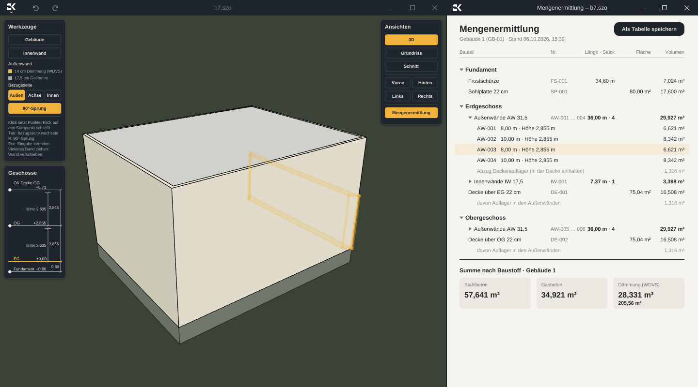
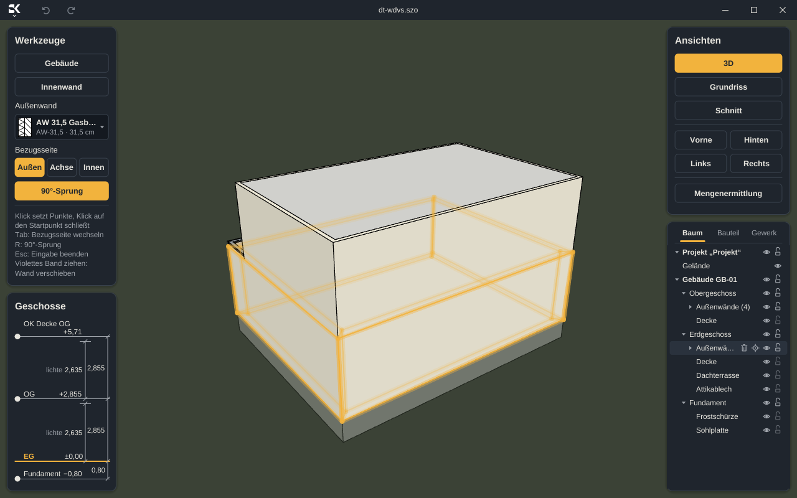
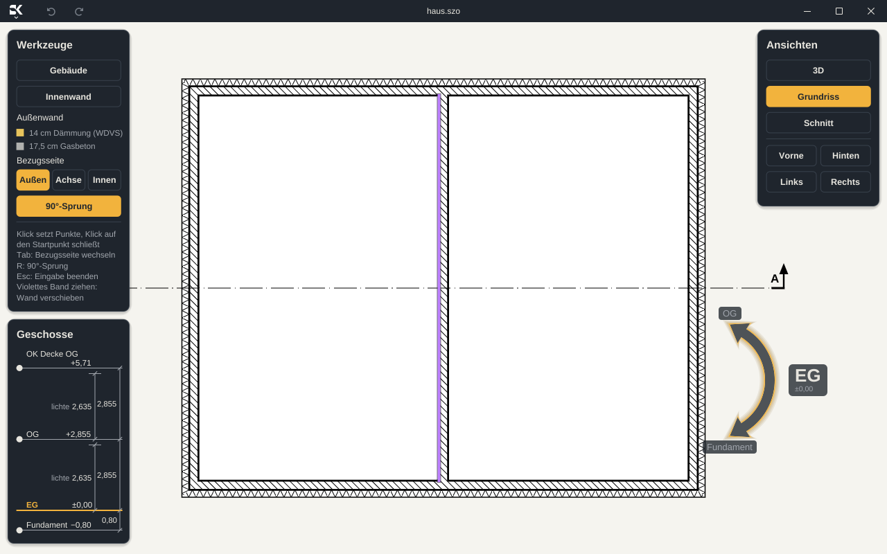
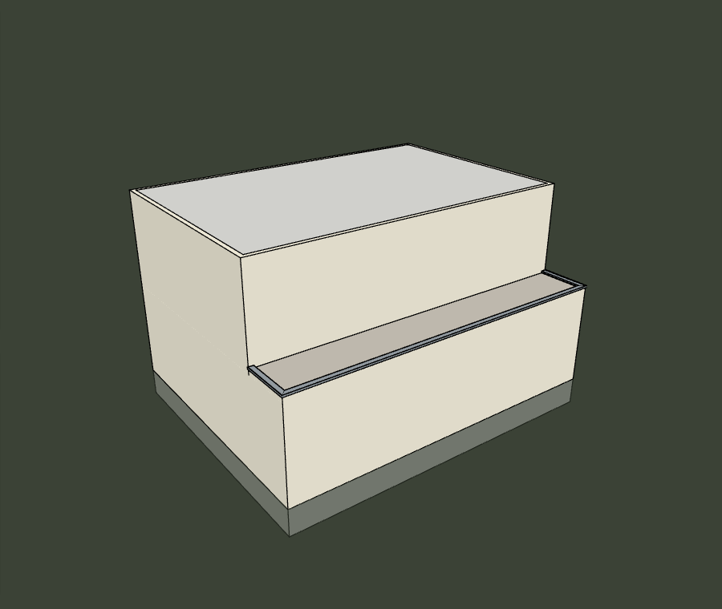
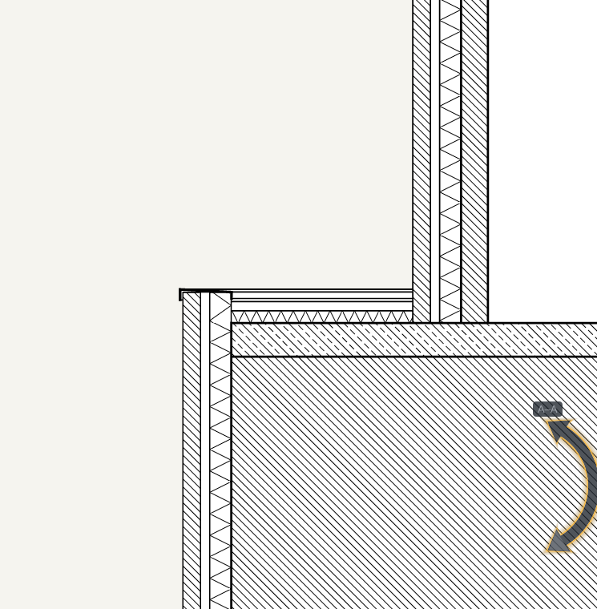
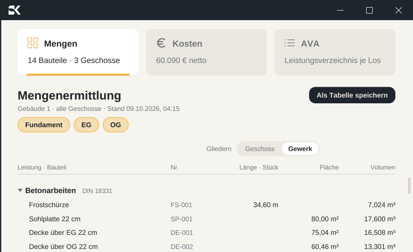
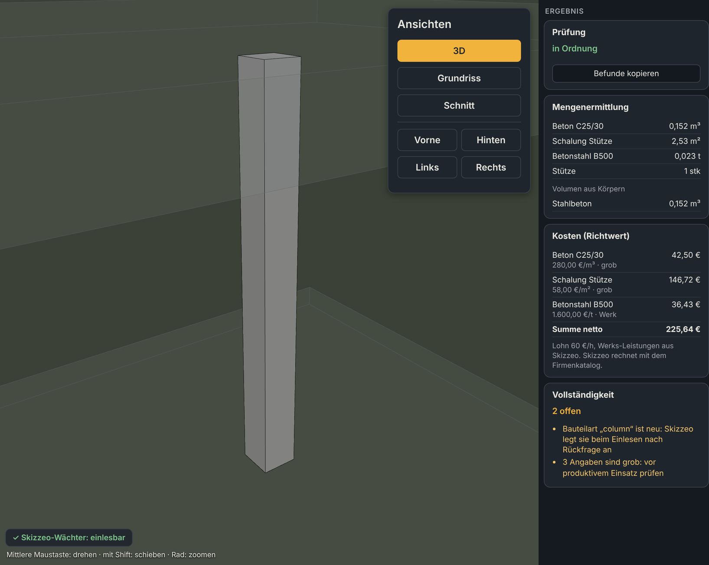
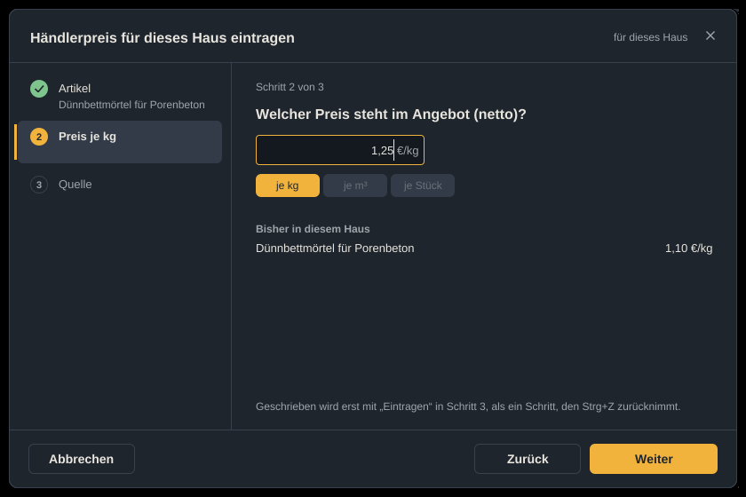

Die neue Ära der
3D-Gebäudemodellierung.
Intuitiv. Kreativ. Echtzeit.
Skizzeo ist ein 3D-Gebäudemodellierer für Ein-, Doppel- und Mehrfamilienhäuser. Modell, Mengen, Kosten und Ausschreibung laufen in einem Programm, gleichzeitig und in Echtzeit.
Die Idee
Gebaut für das Wohnhaus. Gedacht von einem Bauplaner.
Skizzeo ist ein 3D-Gebäudemodellierer für Einfamilien-, Doppel- und Mehrfamilienhäuser. Das Programm will nicht jede Bauaufgabe lösen. Es soll genau diese Häuser sehr gut können.
Hinter Skizzeo steht ein Bauplaner und Bauingenieur mit dreißig Jahren Praxis. Das Programm bildet seinen Arbeitsablauf ab, vom ersten Umriss bis zum Leistungsverzeichnis, und lässt beim Entwerfen alle Freiheit.
- Arbeitsweise
- Sie arbeiten direkt am Bauteil: im 3D-Modell, im Grundriss, im Schnitt und in der Ansicht.
- Auswertung
- Mengen, Kosten und Ausschreibung laufen in Echtzeit mit.
- Einstieg
- Keine Parameterflut und keine lange Schulung. Was Skizzeo sinnvoll selbst festlegen kann, legt es selbst fest.
Für wen
Für Praktiker, nicht für CAD-Spezialisten.
Für alle, die Wohnhäuser planen, bauen oder verkaufen und schnell zu einem Modell mit Mengen und Kosten kommen wollen.
- 01
Architekten
Entwerfen direkt in 3D, Bauzeichnungen nach deutscher Norm und ein Kostenrahmen aus demselben Modell.
- 02
Bauunternehmer
Ein Haus im Kundengespräch in Minuten modellieren, Mengen und Kosten sofort sehen, Leistungsverzeichnisse je Gewerk erstellen.
- 03
Bauträger
Wandtypen, Baustoffe, Preise und Bauleistungen der eigenen Firma einmal anlegen und in jedem Projekt nutzen.
- 04
Immobilienmakler
Ein anschauliches 3D-Modell und eine erste Kostenschätzung für das Gespräch mit Interessenten, ohne CAD-Kenntnisse.
Modell und Auswertung
Modell und Kosten. Gleichzeitig und gekoppelt.
Neben dem 3D-Modell oder dem Grundriss öffnen Sie ein zweites Fenster mit Mengen, Kosten und Ausschreibung, daneben oder auf einem zweiten Bildschirm.
Beide Fenster sind in beide Richtungen verbunden: Markieren Sie eine Zeile, leuchtet das Bauteil im Modell auf, und umgekehrt.
- Echtzeit. Jede Änderung am Modell sofort in Mengen und Kosten.
- Ein Programm. Kein Datenaustausch zwischen getrennten Programmen.

Ansichten
Ein Modell. Jede Ansicht bearbeitbar.
3D-Modell, Grundriss, Schnitt und Ansichten zeigen dieselben Bauteile. In jeder Sicht arbeiten Sie mit denselben Werkzeugen, und alle anderen Sichten folgen sofort.
Die Bauzeichnungen folgen der deutschen Norm: tragende Bauteile mit breiter Schnittkontur, normgerechte Schraffuren für Beton, Mauerwerk und Dämmung.


Bauwissen
Denkt wie ein Bauplaner.
Jedes Bauteil ist so modelliert, wie es auf der Baustelle entsteht und abgerechnet wird. Springt das Obergeschoss zurück, entsteht auf der Decke von selbst eine Dachterrasse mit Dämmung, Belag, Attika und Attikablech.
- Gründung mit Stahlbeton-Sohlplatte und umlaufender Frostschürze.
- Geschosshöhe ziehen oder eintippen, und das ganze Haus passt sich an.
- Wandaufbauten aus einem Bauteilkatalog, auch als Firmenkatalog.


Auswertung
Mengen, Kosten, Leistungsverzeichnis.
Ein Klick öffnet die Auswertung mit drei Karten: Mengen je Bauteil, Geschoss, Baustoff und Gewerk, die Kostenschätzung nach Gewerk, Geschoss oder Kostengruppe nach DIN 276 und das Leistungsverzeichnis je Los und Gewerk als PDF, mit oder ohne Preise.
- Kosten nur für Material oder für Material und Lohn.
- Eigene Firmenpreise und Bauleistungen hinterlegen.
- Mengen so getrennt, wie sie abgerechnet werden.

Zum Ausprobieren
Ziehen Sie die Wand.
So fühlt sich Echtzeit an. Ziehen Sie das violette Band an der rechten Außenwand. Grundfläche, Wandflächen und Kosten rechnen sofort mit.
In Skizzeo funktioniert das genauso, im 3D-Modell, im Grundriss, im Schnitt und in den Ansichten.
Rohbau und Fassade Beispiel
| Hausmaß | 10,00 × 8,00 m |
|---|---|
| Grundfläche | 80,00 m² |
| Außenwand, 2 Geschosse | 205,56 m² |
| Mauerwerk und WDVS | 34.945 € |
| Sohlplatte und Decken | 11.933 € |
| Summe netto | 46.878 € |
Vereinfachtes Beispiel mit gerundeten, unverbindlichen Richtwerten. Keine Kalkulation.
In Entwicklung
Eigene Bauteile. Ohne Programmieren.
Mit der Bauteil-Werkbank legen Sie eigene, firmenbezogene Bauteile an, ganz ohne Programmier- oder Skriptkenntnisse. Sie laden die Werkbank in einen KI-Chat Ihrer Wahl und beschreiben das Bauteil in Worten, per Sprache oder mit einem Bild. In der Vorschau wächst es mit Mengen, Preisen und Bauleistungen. Danach übernehmen Sie es in Skizzeo.
Ihre BeschreibungBitte eine Stahlbetonstütze 24/24 cm, Fuß auf der Rohdecke, Kopf unter der Decke. Dazu die Typen 30/30 und 24/40.
WerkbankDie Stütze steht in der Vorschau. Beton, Schalung und Betonstahl werden mitgezählt, die Richtpreise sind als grob markiert.

Verwaltung
Planen statt verwalten.
Baustoffe, Preise und Bauleistungen pflegt heute eine geführte Verwaltung mit Entwurf, Vorschau und Freigabe. Ein Händlerpreis aus einem Angebot ist in drei Schritten übernommen.
Ausblick
Als Nächstes soll eine KI diese Arbeit übernehmen. Sie recherchiert neue Bauteile, Preise und Leistungstexte und legt sie sauber an. Eine Schulung für die Verwaltung soll es dann nicht mehr brauchen.

Kontakt
Skizzeo erscheint bald.
Sie möchten früh dabei sein oder haben Fragen und Anregungen aus der Praxis? Schreiben Sie uns.
info@skizzeo.comFür Windows
Als eigenständiges Programm auf Ihrem Rechner.
Ohne Internet
Skizzeo läuft vollständig lokal und braucht keine Verbindung.
Eigenständig entwickelt
Eigener Geometriekern und eigene Oberfläche. Schnell und schlank.
Sicher gespeichert
Jeder Schritt lässt sich zurücknehmen. Gesichert wird automatisch alle fünf Minuten.
Rechtliches
Impressum
Angaben gemäß § 5 DDG
Dipl.-Ing. (FH) Jörn Horstmann
Denkmalsweg 18b
27777 Ganderkesee
Deutschland
Kontakt
E-Mail: info@skizzeo.com
Verantwortlich für den Inhalt nach § 18 Abs. 2 MStV
Dipl.-Ing. (FH) Jörn Horstmann, Anschrift wie oben.
Haftung für Inhalte
Die Inhalte dieser Seiten wurden mit Sorgfalt erstellt. Für die Richtigkeit, Vollständigkeit und Aktualität der Inhalte wird jedoch keine Gewähr übernommen. Skizzeo befindet sich in Entwicklung. Beschriebene Funktionen und Bilder zeigen einen Entwicklungsstand und können sich ändern.
Haftung für Links
Diese Website enthält keine Links zu externen Websites Dritter. Sollte sich das ändern, gilt: Für die Inhalte verlinkter Seiten ist stets der jeweilige Anbieter oder Betreiber verantwortlich.
Urheberrecht
Texte, Bilder, Grafiken und das Logo auf dieser Website sind urheberrechtlich geschützt. Eine Verwendung außerhalb der Grenzen des Urheberrechts bedarf der vorherigen schriftlichen Zustimmung.
Rechtliches
Datenschutz
Entwurf für den Prototyp. Vor der Veröffentlichung bitte prüfen, insbesondere die Angaben zum Hosting. Stellen in Gelb sind noch offen.
Verantwortlicher
Dipl.-Ing. (FH) Jörn Horstmann, Denkmalsweg 18b, 27777 Ganderkesee, E-Mail: info@skizzeo.com
Grundsatz
Diese Website ist ein reines Informationsangebot. Sie setzt keine Cookies, verwendet keine Analyse- oder Werbedienste und bindet keine Inhalte fremder Anbieter ein. Schriften und Bilder werden vom eigenen Server geladen.
Server-Logdateien
Beim Aufruf der Website verarbeitet der Hosting-Anbieter technisch notwendige Daten, die Ihr Browser übermittelt: IP-Adresse, Datum und Uhrzeit des Abrufs, aufgerufene Seite, Browsertyp und Betriebssystem sowie die zuvor besuchte Seite. Diese Daten dienen der sicheren und stabilen Bereitstellung der Website. Rechtsgrundlage ist Art. 6 Abs. 1 lit. f DSGVO. Die Logdateien werden nach [Speicherdauer beim Hoster erfragen] gelöscht.
Hosting-Anbieter: [Name und Anschrift des Hosters]. Mit dem Anbieter besteht ein Vertrag zur Auftragsverarbeitung nach Art. 28 DSGVO [prüfen].
Kontakt per E-Mail
Wenn Sie uns per E-Mail schreiben, verarbeiten wir Ihre Angaben, um Ihre Anfrage zu beantworten. Rechtsgrundlage ist Art. 6 Abs. 1 lit. b oder f DSGVO. Die Daten werden gelöscht, sobald sie für diesen Zweck nicht mehr erforderlich sind und keine gesetzlichen Aufbewahrungspflichten bestehen.
Ihre Rechte
Sie haben das Recht auf Auskunft, Berichtigung, Löschung und Einschränkung der Verarbeitung Ihrer Daten, auf Datenübertragbarkeit sowie auf Widerspruch gegen die Verarbeitung. Wenden Sie sich dazu an die oben genannte Adresse.
Sie können sich außerdem bei einer Datenschutz-Aufsichtsbehörde beschweren, zum Beispiel bei der Landesbeauftragten für den Datenschutz Niedersachsen.